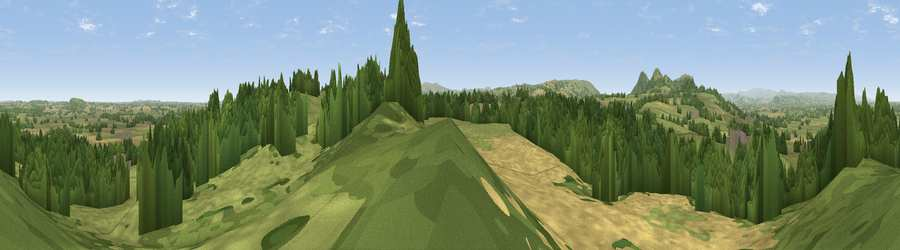

Viewpoint near Alberbury
#14627 in England · top 57% of its area beats it · near AlberburyThe view, rendered

A 360° render of this exact spot computed from the terrain model, tree cover and land cover — summer colours, afternoon light, calibrated against photographs of famous viewpoints. Real trees, hedges and buildings will differ in detail.
The panorama
Grey silhouette: terrain skyline in each direction (720 bearings, Earth curvature and refraction included). Dashed green: skyline with trees (+15 m) and buildings (+8 m) as obstacles. Blue strip: how far the ground is visible on each bearing.
Where the view opens
Wedge length = distance to the farthest visible ground on that bearing (vegetation-aware). Rings at 10, 25 and 50 km.
What fills the view
50% grassland · 31% woodland · 18% cropland ·
Angular shares of the visible panorama (visual magnitude), not map area. Landscape diversity 0.46 (0–1 Shannon).
Key numbers
More beautiful places nearby
The staircase of upgrades: each row has a higher view potential than everything closer. Driving times are estimates from straight-line distance, calibrated against real road routing — check an actual route before setting out.
| Place | Direction | Drive | Score |
|---|---|---|---|
| Viewpoint near Alberbury | ESE · 0 km | ~2 min | 66.5 |
| Viewpoint near Melverley | W · 4 km | ~8 min | 74.2 |
| Viewpoint near Melverley | W · 4 km | ~9 min | 78.2 |
| Viewpoint near Halfway House | W · 5 km | ~11 min | 83.3 |
| The Lawley | SE · 22 km | ~36 min | 85.8 |
| Viewpoint near Little Wenlock | ESE · 28 km | ~44 min | 86.6 |
| North Hill | SSE · 79 km | ~103 min | 86.8 |
| Worcestershire Beacon | SSE · 80 km | ~104 min | 87.1 |
52.71955, -2.95820 · source: screening · position refined by local search. Computed location — check access rights before visiting.